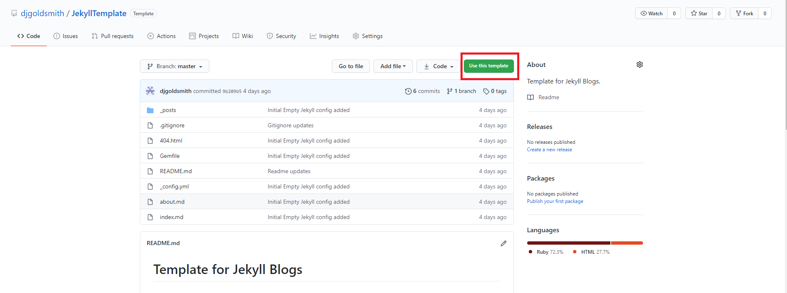
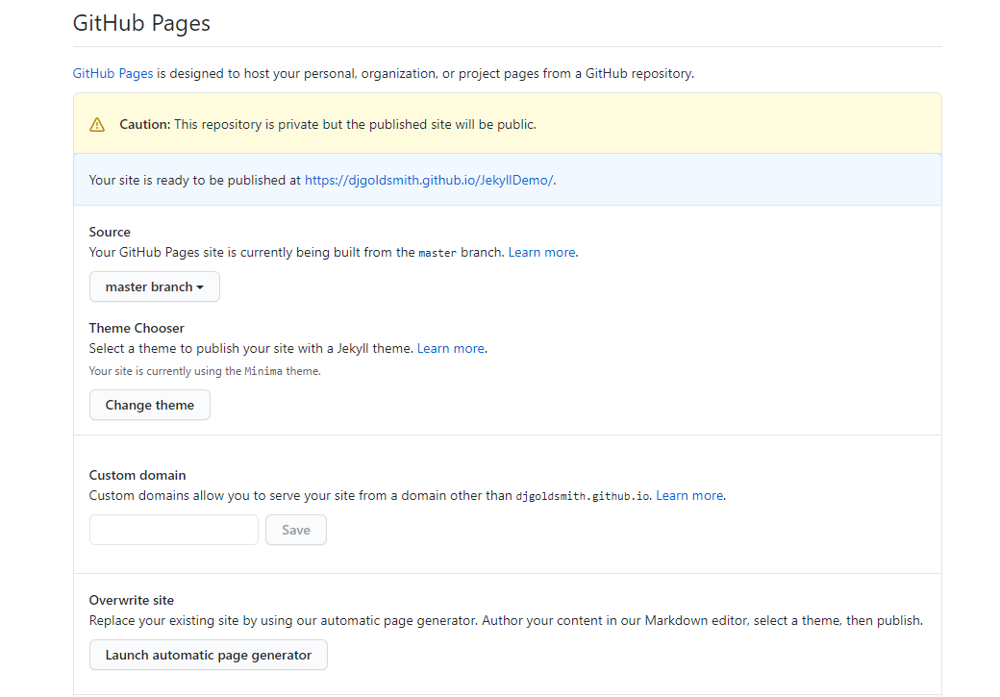
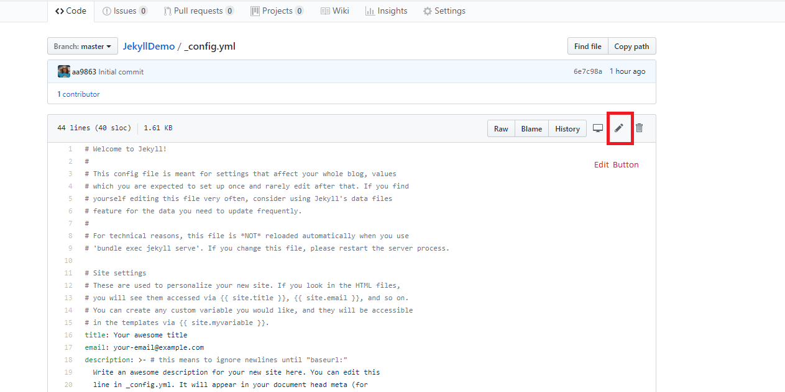
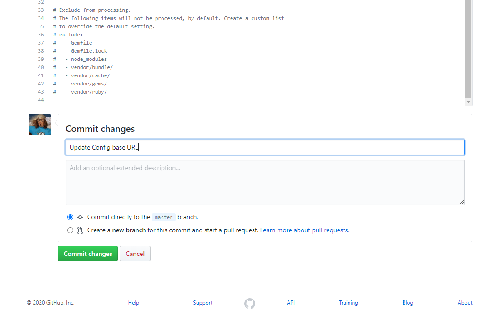

Using the template
In this article we will go through the process of setting up a new version of the repository, and make our first change to the content.
You will need to sign up for a GitHub account. Its free, (as free as any other "free" online service is anyway)
Getting a copy of the template
Our first step is to get a copy of the template.
For this we need to create a new repository. This will create a new project on github, for your blog. As we are going to use GitHubs nifty template feature, this is a pretty simple process.
Visit https://github.com/djgoldsmith/JekyllTemplate Click the "Use this Template" button, and give your blog a name.

Info
The repository name you choose will be part of the address for the blog.
For example. A repo with the name MyBlog will be available at
https://<yourname>.github.io/MyBlog
Note
GitHub also allows us to have ONE "user" site.
This will have the address http://<yourname>/github.io
Changing the repository name to
We can also have pages for Organisations, so if you have a group of related projects, there is no excuse not to have documentation.
Enabling the Pages Feature
We also need to enable the Pages Feature, to make the blog available.
Under Settings, there should be a section on Github pages. In this case we can set the source to be the master branch

Letting GitHub do its magic
Once pages are enabled, GiHub will scan the repository, workout you have a Jekyll blog then create and render the content. The site should now be available.
Note
It can take a bit of time for pages to update. Usually its pretty fast though. If you are not seeing you changes wait a while then refresh the page.
Making our First Change
If you view the page you will notice it has no style of formatting. This is because the site needs configuring to have the correct addresses for the Jekyll formatting.
We will need to edit the _config.yaml file to provide this information.
First we need to get the correct address for the config. This is based on the URL (in the address bar) of the site.
For example, if we have the Repository JekyllDemo we get.
- URL (from browser):
https://djgoldsmith.github.io/JekyllDemo/- url
https://djgoldsmith.github.io/
- baseurl
/JekyllDemo/
Editing config.yaml
To edit the file we need to open it in the web browser then click the edit button. Change update these lines with the site information
baseurl: "/JekyllDemo" # the subpath of your site, e.g. /blog
url: "https://djgoldsmith.github.io" # the base hostname & protocol for your site, e.g. http://example.com

We can also update the other site options here. For example the site name and your various contact information.
title: IOC Blogging Demo
email: my-Email
description: >- # this means to ignore newlines until "baseurl:"
This is a demo of creating blogs with Jekyll and Github pages.
We are using it in the Institute Of Coding July Webinars Series.
baseurl: "/JekyllDemo" # the subpath of your site, e.g. /blog
url: "https://djgoldsmith.github.io/" # the base hostname & protocol for your site, e.g. http://example.com
twitter_username: born2briled
github_username: djgoldsmith
Committing our changes
Finally we need to commit our changes. This will save them along with a commit message that can remind us (or anyone we are working with) what the change was about
